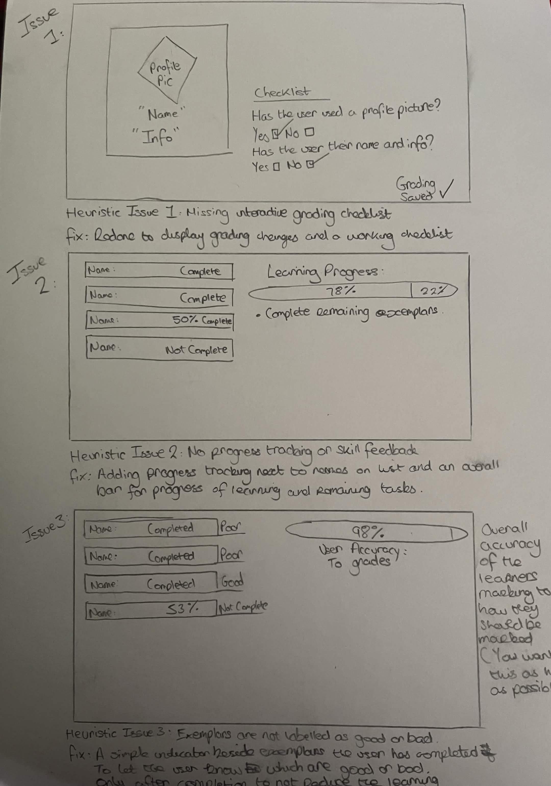
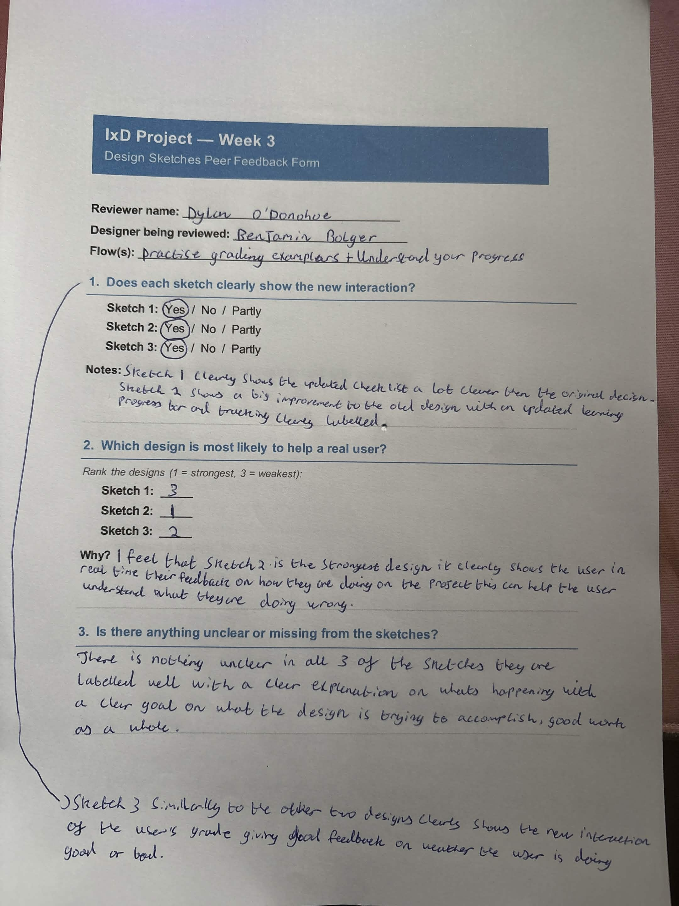
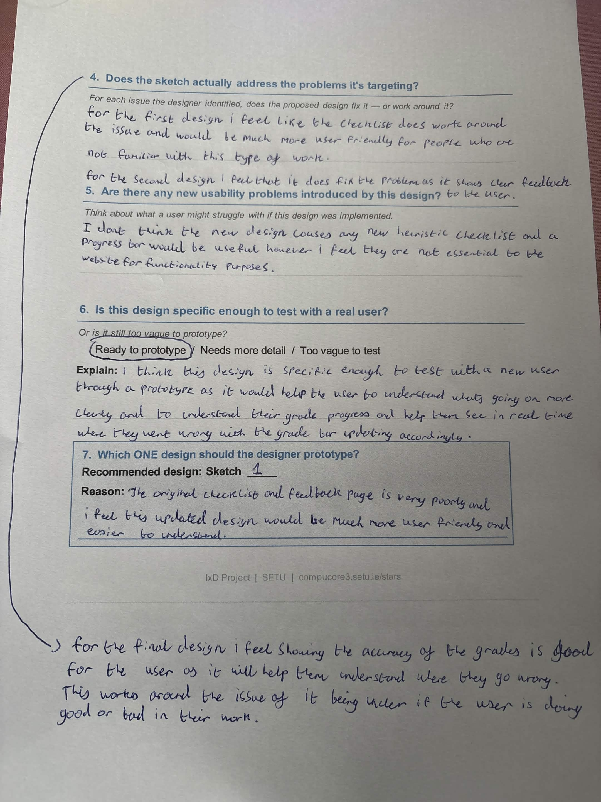
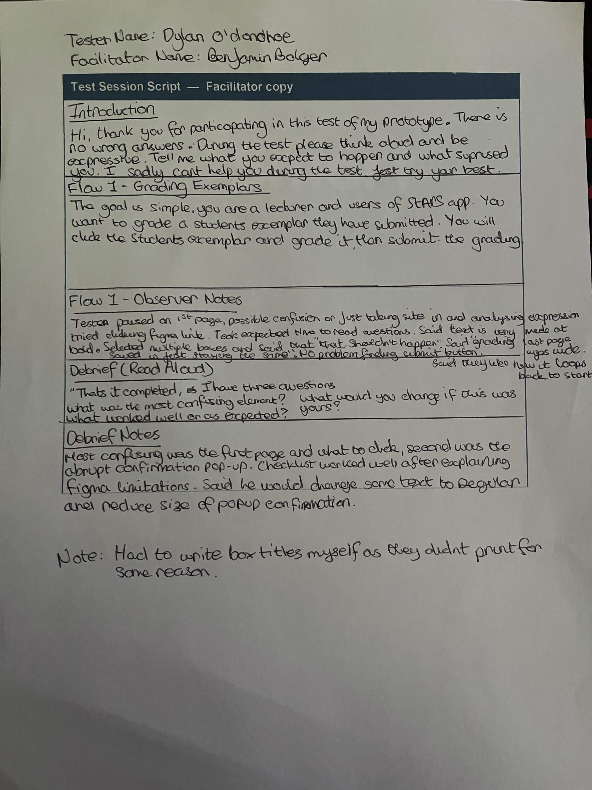

Interaction Design Project – STARS
Introduction
Author: Benjamin Bolger - C00324085
STARS is a web platform where teachers create assignments and students submit their work. They then can recieve feedback through peer reviews, teacher assessment and AI evaluation.My assigned flow is “Practice grading exemplars + Understand your progress.” In this flow, Lecturers open exemplar entries and review them. They are expected to learn what makes a strong or weak submission while tracking their own development. This flow matters as it is a part of the IxD26 end of year project as well as to help students build assessment skills and understand their progress across competencies.
User & Task Analysis
Flow 1 – Overview
| Flow name | Practice Grading Exemplars & Understanding Progress |
|---|---|
| User role | Lecturer |
| Trigger | The student wants to review exemplar submissions to understand what makes a strong or weak profile. |
| End state | The student understands differences between good and poor examples and gains insight into their own skill development. |
Flow 1 – Step Table
| Number | User Action | System Response | User Goal | Pain Point/issue? |
|---|---|---|---|---|
| 1 | Lecturer navigates to the “Exemplars” section. | System loads a list of exemplar names. | Access exemplar materials. | Yes - unclear what this section contains or what the exemplars are. |
| 2 | Lecturer clicks an exemplar name. | A profile card opens with picture, name, and info. | View the exemplar. | No. |
| 3 | Lecturer scrolls through the profile card. | Static information shown with no guidance. | Understand quality of example. | No. |
| 4 | Lecturer returns to the list. | List reloads. | Compare examples. | No. |
| 5 | Lecturer opens another exemplar. | Another similar profile card appears. | Identify differences. | No. |
| 6 | Lecturer looks for a grading checklist. | Checklist appears but isn't interactable. | Practice assessment skills. | Yes - Can't use checklist or submit review. |
| 7 | Lecturer looks for progress tracking. | No progress indicators shown. | Understand progress. | Yes - no feedback. |
| 8 | Lecturer leaves the section. | No completion confirmation. | Know when finished. | Yes - unclear end state. |
Pain Point Log
| Number | Flow | When in the flow? | What happened? | Why is this a problem? | Severity |
|---|---|---|---|---|---|
| 1 | Exemplars | Step 1 | The term is "Exemplars' is unclear | Users don't know what this section contains or what they're expected to do | Medium |
| 2 | Exemplars | Step 2 | Expected an assignment or artefact but a profile card appears instead | Breaks the users expectations and causes confusion | High |
| 3 | Exemplars | Step 3 | No labels or indicators explaining what makes a good or bad example. | Users cannot learn from the exemplar because the level of quality needed is not communicated well | High |
| 4 | Exemplars | Step 3 | No grading chechlist or assessment tool appears | The page is meant to support practice grading but the tools are missing | High |
| 5 | Exemplars | Step 5 | Cards look identical. | Hard to compare quality. | Medium |
| 6 | Exemplars | Step 6 | No instructions. | User will be unsure what to do. | Medium |
| 7 | Exemplars | Step 7 | No progress tracking. | User cannot understand their current progress | High |
| 8 | Exemplars | Step 8 | No confirmation or end state for progress after viewing exemplars. | User unsure if finished. | Medium |
| 9 | Exemplars | Overall | No indication of good or poor examples. | User cannot learn assessment skills. | High |
Flow Summary
Top Three Issues:
1. Missing Interactive Grading Checklist2. No Progress tracking or skill feedback
2. Exemplars are not labelled as good or poor
The exemplar flow allows students to open and review example profile cards, but the purpose of the task is unclear from the very beginning. Instead of seeing assessable artefacts, users encounter static profile cards with no labels, instructions, or indicators of quality, making it difficult to understand what they are supposed to learn. The absence of grading tools, progress tracking, or a clear completion state means the user cannot practise assessment skills or understand their development, even though this is the stated goal of the flow. Overall, the experience feels unfinished and confusing, leaving students unsure of what to do, what they are meant to learn, or when the task is complete.
Interface Evaluation
Heuristic Mapping
| Number | Pain Point | Nielsen Heuristic | Severity |
|---|---|---|---|
| 1 | “Exemplars” term is unclear | H2 - Match between system and real world | Medium |
| 2 | Expected assignment but got a profile card instead | H2 - Match between system and real world | High |
| 3 | No labels for good or bad examples | H1 - Visibility of system status and H6 — Recognition over recall | High |
| 4 | No grading checklist or assessment tools included | H1 - Visibility of system status | High |
| 5 | Cards look identical and no default comparison | H4 - Consistency and standards | Medium |
| 6 | No instructions or guidance at all | H10 - Help and documentation | Medium |
| 7 | No progress tracking | H1 - Visibility of system status | High |
| 8 | No completion confirmation when finished an exemplar | H1 - Visibility of system status | Medium |
| 9 | No indication of good or poor examples | H6 - Recognition over recall | High |
Top 3 issues & Design Briefs
Issue 1 - Missing Interactive Grading Checklist (H1)
The exemplar pages shows a checklist but it isn't interactable in the slightest, leading to the user not be able to complete the task they are assigned. This breaks the whole purpose of their task and leaves them confused. THis would need to be redone to provide a fully interactale checklist that responds to the user's inputs by selecting criters and submit their grading with clear feedback.
Issue 2 - No Progress tracking or skill feedback (h1)
There is no user feedback during the flow, meaning the user has no idea if they are improving in grading or if their actions are even being registered. This makes the "Understand your progress" impossible. If redone, there should be a visible progress tracker as the user reviews and a display when the users actions are registered.
Issue 3 - Exemplars are not labelled as good or poor (H6)
All Exemplars look the same and none are labelled as strong or weak. This forces the user to guess if the exemplar they are correcting is a good or bad example to try and learn. Without clear indicators, the user can't recognise the difference between good and poor work. when redone, the page should clearly label each exemplar and highlight what makes a good exemplar for the user to base their correcting off of.

Design Proposals
Proposals
Solution 1
The problem that needs to be addressed is that the checklist shows buttons but you can't interact with them. The change here is simple and it is to make the buttons interactable and selectable. This is to stop completely throwing off users and allowing them to complete the flow where they previously could not. There is no trade off in this situation thankfully, only improvements.
Solution 2
The problem that needs to be addressed is there is no feedback during the flow, the user has no idea if they are improving in grading. The solution here is too show an accuracy of each grading submitted on the submit confirmation page. This rationally makes sense because otherwise the lecturer could keep submitting poor grading quality without even knowing. There is no trade offs here and only improvements except for a tiny bit more cluttered submission confirmation screen.
Solution 3
The problem that needs to be addressed here is that all exemplars look the same and are not labelled as good or poor examples. This forces the user to guess if an exemplar is good or bad while learning. The simple fix would be to lable some as good or bad depending on the stage of learning. Not all as the user still has to think for themselves and grade them. This rationally makes sense as they have a basis to learn. This issue and solution goes in tandem with issue and solution 2. There is the trade off that the user is given hints to what is right and wrong which possibly might skew learning results. I still do believe this is neccessary.
Peer Review


Prototype
Figma Prototype Link
View Figma Prototype
Note: Some functions not completely working in Figma due to limitations with software including checklist and grading confirmation.
The solution I decided to prototype is solution 1, I also added some extra features and fixes that I thought and conveyed when doing my sketches.
Annotated App Screenshots (2)


Annotated Flow Screenshots (4)


User Test
Method
The test I ran was the participant using stars to naviagate and grade a students work they sent in. The participant was a lecturer attempting to grade a students work. They tested the flow of "Grading an Exemplar".
Test


Oberservation Log
| # | Task / Step | What the tester did | Said or expressed | Pass / Struggle / Fail |
|---|---|---|---|---|
| 1 | Click an exemplar to begin grading | Paused momentarily on the page | Expressed possible confusion with where to click next | STRUGGLE |
| 2 | Click Figma link | Tester tried to click the figma link at the top | no expression but kew what to do | PASS |
| 3 | Read Grading Questions | Tester took the expected time to read the question, no longer | Tester showed understanding meaning text was clear and legible | PASS |
| 4 | Reading text on grading page | Stared at the page momentarily | tester said "All the text is the same... very bold" | FAIL |
| 5 | Using checklist boxes for grading | Used them with ease, selected multiple boxes (limitation of Figma) | tester said "that shouldn't happen" | PASS (Limitation of Figma I couldn't fix) |
| 6 | Understand grading saved notification | Viewed "Grading Saved" text when checking boxes | Made a comment that the text stayed static and didnt update | PASS (Another limitation of Figma I couldn't fix |
| 7 | Locating the submit button | Tester found the submit button with ease | Made no comment but showed understanding | PASS |
| 8 | Viewing and understanding submit confirmation page | Tester viewed and understood the page | Tester made a face at the confirmation submission page, likely due to overly large text | FAIL |
| 9 | Click "return to exemplars" button | Tester did as such with no issue | Made the comment "It loops back to the start well" | SUCCESS |
Findings Log
| Post-Test Findings Summary |
|---|
What did the tester complete successfully?Tester clicked the figma link successfully even though it was not functional in figma due to limitations. The tester then went on to successfully read the questions, use the checklist for grading, find the submit button, click the submit button, read the confirmation screen and come back full circle to the first page where they started. |
Where did they hesitate or struggle?Tester struggled momentarily to distinguish clickable student names on the first page. They also expressed issues with the grading saved text not updating, all of the text being bold and finally made a face at the submission confirmation screen. |
Where did they fail or give up?Tester did not fail as such with anything or give up, they only struggled to understand certain elements as mentioned in the above section. |
Most useful thing they said during think aloud?The most useful thing said during think aloud was "All the text is the same... very bold". This was helpful as I likely would have never known. This issue is something almost impossible to pinpoint with expressions so this was easily the most helpful and helped me to identify a core issue. |
Most useful thing they said during debriefDuring the debrief, they elaborated on the text issue even more. They explained that the text felt extremely linear and also harsh on the eyes against the white background. They suggested that the text for the questions be made into regular and the bold kept for the submit button, grading saved notification and the checklist headers. They also made the comment of "Half the size of the confirmation pop thing". |
Did your top 3 issues from Week 2 show up?The test did in fact confirm the three week 2 issues, the issues I identified in week 2 did not appear again therefore meaning I found and fixed them appropriately. |
Did any NEW issues appear that you hadn’t identified?Yes, after fixing many issues, three more issues appeared during the test of the prototype. The first issue being the contrast between clickable options on the exemplars list page.The second issue was too much of the text being bold and as described /by the tester, too harsh on the eyes. The last issue was the overly large confirmation popup on the last page. It was too abrupt and large, essentially scaring and overwhelming the user. |
Does this change your design? If so, how?Yes, this will definitely change the overall look of the design. My design will change by adding extra contrast to the buttons on the first page to properly define clickable elements. To fix the issue of too much bold text, I will take my participants advice and change the question text from bold to regular while keeping the rest of the text bold. Lastly I will reduce the size of the popup confirmation text to be less abrupt and overwhelming to the user while still conveying relevant information. |
Reflection
I was suprised that the participant did not like the all bold text on the second page (checklist page). I'm quite fond of bold text and find it easier to read and focus on with my attention span. Clearly this is not the same for everyone.
I would certainly change the exemplar entries on the first page (Gradeable exemplars list) to be more defined against the background. I would also change the submission confirmed text to be less abrupt and large to avoid jumpscaring or overwhelming the user. This would be better fit in a video game as a splash screen and not a website for lecturers. I am still unsure whether I would change the bold on page 2. From my research, people tend to precieve bold text as easier to read, potentially removing somebold might improve the accessibiliy of the prototype.
Reflection
What I Discovered
I think out of everything I discovered whilst making and presenting this project, the most eye-opening was that no matter how much you improve something, someone can take a look at it and find more improvements. Half of the lesson here is about finding issues, identifying them and then taking measures and implementations to fix. The other half is that there will always be more improvements that can be made to boost usability and accessibility for users. This becomes apparent during peer reviews when you think you've thought of everything, your peer finds something new to improve upon or an exisiting issue entirely, or an issue you believed to be acceptable but others may not. This was by far the most interesting part of the project I discovered and it proves the need for users and testers to constantly analyze accessibility and usability in games, websites and software.
Heuristic Evaluation & User Test
My heuristic evaluation and user test compoletely agreed thankfully. All issues I identified were found during the user test and were solved in my prototype. However, new issues did arise after the prototype test such as too much bold test, the contrast betw een interactable elements and background being skewed, and the overly large popup notification. These are issues I would fix if I was to complete another prototype.
What I Would Change
If I had one more week, I would test my prototype and evaluate issues the same as I did for the original website back in Week 1 and 2, and then repeat the process. This would double the project but It would've certainly been interesting to find issues I overlooked the first time. As I said above, finding issues after you think you've found all the issues is extremely interesting to me as its a challenge to best your own record in a way. This is what I would do with another peer review alongside it. sub-secondly, I would also flesh out some more of the text in the project and go more broad in some areas. I believe I was a bit afraid to veer too of course with paragraphs and captions to avoid losing marks for waffle, but looking back I believe in this case it may have been useful to the reader and would improve my own skills.
What I'd Do Differently Next Time
If I was to restart from week 1, I would love to attain a different flow. I ultimately found my flow compared to others a little bit more boring and lackluster. This may have also been caused by me going of course and interpreting the meaning and direction of my flow differently compared to others with the same topic. I now know that I was never meant to go to the Exemplars tab in stars and analyse there, but rather I was meant to go to practise and conduct my flow there. This changed up my project compared to others but I would certainly try to stick to the original plan and pay more attention in the future. For next time, I would like to have been tasked with submitting something for others to review and grade but my flow was out of my control sadly.
Final Report Checklist
| Done | Section | Must include |
|---|---|---|
| ✔ | Introduction | App described, your name and flows stated, why these flows matter |
| ✔ | User & Task Analysis | Your assigned flow(s) overviews complete, step tables filled in, pain point log with severity ratings, top 3 identified |
| ✔ | Interface Evaluation | Method noted, findings table with H# codes and severity, 4+ annotated screenshots, summary names top 3 issues |
| ✔ | Design Proposals | 3+ proposals, each with problem, change, rationale, trade-offs, Figma frame reference |
| ✔ | Prototype | Figma link works, both flows testable end-to-end, before/after screenshots alongside proposals |
| ✔ | User Test | Method, task prompts, observation log, findings summary, reflection on whether issues were confirmed |
| ✔ | Reflection | Honest and specific - what you learned, what you would do differently, one thing you would change about your design now |
| ✔ | Navigation | All 7 sections reachable from the nav menu, nav works on a laptop screen without horizontal scrolling |
| ✔ | Readability | Headings used consistently, tables readable, screenshots have captions, no broken links |